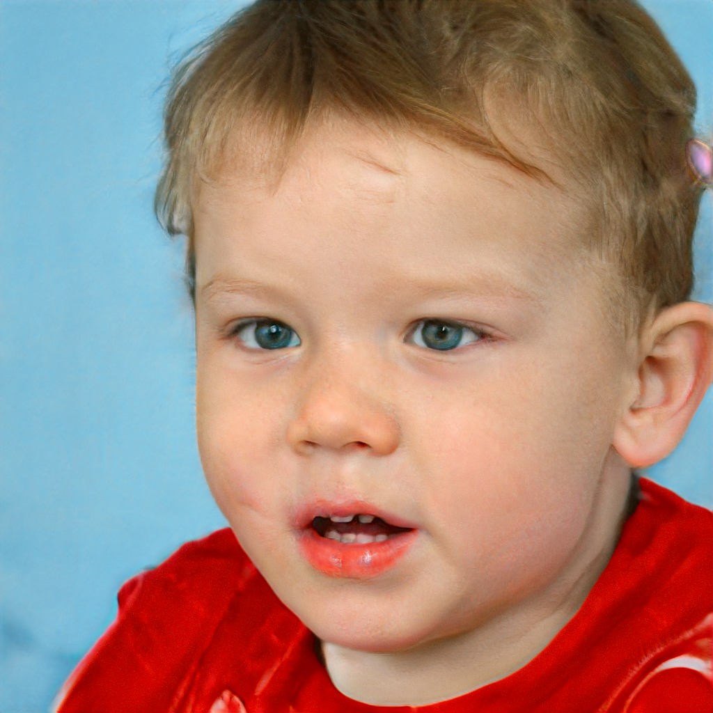
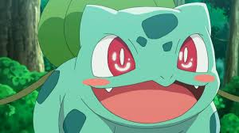

Om meg
Navn
Siri "Bulbazaur" Zachariassen
Alder
14 og 3/4
By/sted
P-town, aka Porsgrunn
http://
tomshosting.no/social/siris-skoledagbok/index.html
Verste uvane
For god til å huske Pytagoras
Kan ikke leve uten
Texas TI-83 kalkisen, og hunden min Blaise
Gullfag
Norsk
Drittfag
Heimkunnskap, heter det egentlig det lenger?
Beste partylåt
Weird Al Yankovic - White & Nerdy
Mitt idol
Ada Lovelace

Siri-news
14.12.2019
Vanvittige søketall. Av en eller annen grunn har analyticsen på sida
mi skutt i være. Sånn serr lissom. Folk er vel interesert i Pokemon
antar jeg.
28.11.2019
Stakk en tur på Down Town i dag. Hang litt på Espresso House, prøvde
Pumpkin Spice Lattè. Den smakte drit.
06.05.2019
Konf-party på korvetten i Brevik. Vant
hvem-kan-spise-flest-klementiner-konken, lett!.
13.37.2005
Ble født, kødda!

Om Bulbasaur
Om
Bulbasaur er en liten firebent Pokemon med blå-grønn hud og mørke
flekker. På ryggen har han ei lita plante. Søt!
Opprinnelse
Bulbasaur er en av de originale Pokemon fra eldgamle dager på
90-tallet. 87% av alle Bulbasaurer er menn, så det er ikke kult å være
kvinnelig Bulbasaur. Med mindre man liker oppmerksomheten som Turid i
B-klassen da.
Secret crush
Navn
Roy Remi "jigglypuff" Rogersen
Alder
16
By/sted
Skien, Gulset
http://
darkweb
Verste uvane
Trimmer alltid moppen litt for mye
Kan ikke leve uten
CS:GO-gønnern min
Gullfag
Mopedlappen
Drittfag
Alt som ikke har med moped å gjøre
Beste partylåt
Afro man - because I got high (lukt på hornsalt, så kjenner du deg
igjen)
Mitt idol
William i Skam